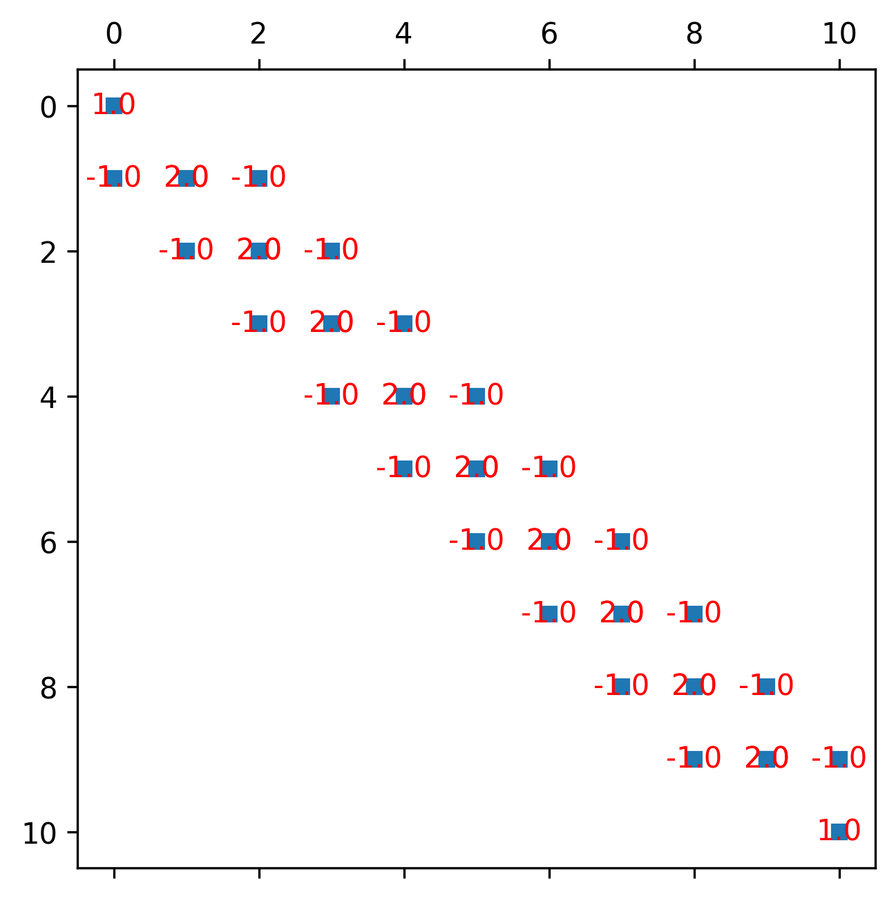

Numerical 1-D FEM solution of the heat diffusion equation
[37]:
import numpy as np
import matplotlib.pyplot as plt
import sympy as sy
from scipy.sparse import csr_matrix
from scipy import sparse
from numpy import array
from scipy.sparse.linalg import spsolve
import matplotlib as mpl
mpl.rcParams['figure.dpi']= 300
from tabulate import tabulate
First we define some numerical constants and define the problem
[38]:
#constants
lx = 10 #width
nnod = 11 #number of nodes
nnodel = 2 #nodes per element
k = 1 #conductivity
Q = 1 #source term
Tleft = 0 #T boundary conditions
Trite = 0
#numerics
nel = nnod-1 #number of elements
Now we make our FEM mesh and element connectivity
[39]:
Gcoord, dx = np.linspace(0,lx,nnod, retstep=True) #global coordinates
EL2NOD = np.array([np.arange(0,nnod-1), np.arange(1,nnod)], dtype=int).T.copy() # connectivity matrix
print(tabulate(EL2NOD, headers=['Element #', 'Node 1', 'Node 2'], showindex=True))
Element # Node 1 Node 2
----------- -------- --------
0 0 1
1 1 2
2 2 3
3 3 4
4 4 5
5 5 6
6 6 7
7 7 8
8 8 9
9 9 10
Now we spell out our analytically-derived element stiffness matrix (see previous sections):
[40]:
#Ael = ???
#Rhs_el = ???
[41]:
# hide: the code in this cell is hidden by the author
Now we need to loop over all elements and assemble the global stiffness matrix
[55]:
Rhs_all = np.zeros(nnod)
# Initialize I, J, and K arrays
I = np.zeros((nel, nnodel * nnodel), dtype=int)
J = np.zeros((nel, nnodel * nnodel), dtype=int)
K = np.zeros((nel, nnodel * nnodel))
# Loop over each element
for iel in range(nel):
# Create connectivity indices for the current element
I[iel, :] = np.tile(EL2NOD[iel, :], (nnodel, 1)).T.ravel()
J[iel, :] = np.tile(EL2NOD[iel, :], (nnodel, 1)).ravel()
K[iel, :] = Ael.ravel()
# Assemble the global right-hand side vector
Rhs_all[EL2NOD[iel, :]] += Rhs_el
# Create the global stiffness matrix using a sparse representation
A_all = sparse.csr_matrix((K.ravel(), (I.ravel(), J.ravel())), shape=(nnod, nnod))
Now we apply the boundary conditions in the usual way and solve using a sparse solver!
[13]:
#Apply boundary conditions
#A_all??
#A_all??
#A_all??
# A_all??
#Rhs_all[0] = ?
#Rhs_all[-1] = ?
[60]:
# hide: the code in this cell is hidden by the author
[62]:
# and solve!
Tnew=spsolve(A_all,Rhs_all)
#Analytical solution
X = np.linspace(0,lx, 100*nnod)
T_ana = -1/2*Q/k*np.square(X) + 1/2*Q/k*lx*X;
# Plotting
fig, ax = plt.subplots(figsize=(10, 5))
ax.set_xlim(0, lx)
ax.set_ylim(min(Tnew.min(), T_ana.min()), max(Tnew.max(), T_ana.max()))
ax.set_xlabel('Distance')
ax.set_ylabel('Temperature')
ax.set_title('FEM vs Analytical Solution')
# Plot the FEM and analytical solutions
ax.plot(Gcoord, Tnew, label='FEM solution', marker='o', linestyle='-')
ax.plot(X, T_ana, label='Analytical solution', linestyle='--')
ax.legend()
ax.grid(True)
# Show the plot
plt.show()
[61]:
plt.figure(figsize=(5, 5))
plt.spy(A_all, markersize=5)
# Iterate over the non-zero elements and add text annotations
nonzero_rows, nonzero_cols = A_all.nonzero()
for i in range(len(nonzero_rows)):
plt.text(nonzero_cols[i], nonzero_rows[i], str(A_all[nonzero_rows[i], nonzero_cols[i]]),
color='r', ha='center', va='center')
plt.show()

[ ]: